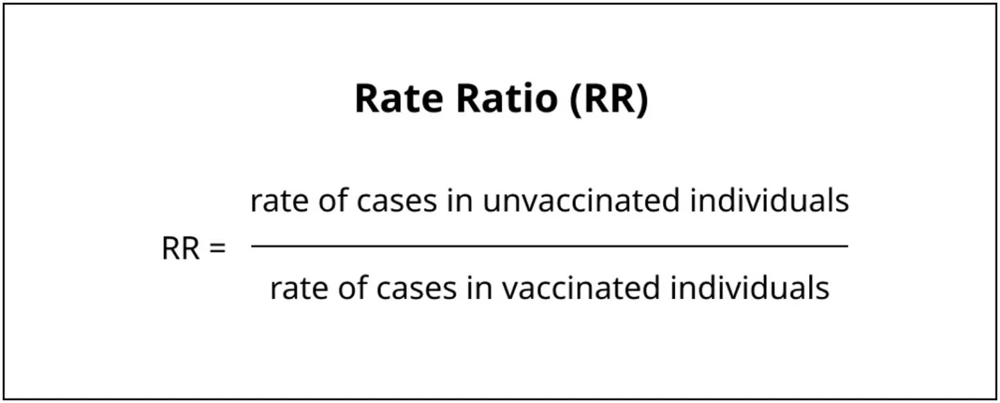

A User’s Guide to US Vaccine Breakthrough Rates
We explain breakthrough rates, rate ratios, and vaccine effectiveness, describe the (sometimes problematic) ways jurisdictions report these numbers, and give advice on how to interpret them.
This piece is originally published at rockefellerfoundation.org/blog/a-users-guide-to-u-s-vaccine-breakthrough-rates/
With the United States over a year into its vaccination campaign, all eyes right now are on Covid-19 rates broken out by vaccination status—measures of the number of Covid-19 cases, hospitalizations, and deaths per 100,000 vaccinated or unvaccinated individuals. Shared by the US Centers for Disease Control and Prevention (CDC) as well as many state, territorial, and local health departments, rates broken down by vaccination status provide a useful way to compare vaccinated and unvaccinated individuals’ relative risk, assess an individual’s absolute risk, and understand how vaccines are faring over time against challenges like new variants.
Yet with any Covid-19 metric, even apparently simple, straightforward calculations can hide surprising complexity; vaccine breakthrough rates are no exception to that trend. While the CDC shares standardized rates data aggregated from up to 29 US jurisdictions representing 67% of the US total population, it does not provide breakdowns of this data by state and territory. As a result, getting more granular data requires turning to a patchwork of state and territorial data sources, for which, even among those jurisdictions publishing their data, consistency is hard to come by.
In this post, we’ll be giving you a guide to interpreting Covid-19 breakthrough rates offered by the CDC, state, and territorial governments—data which can be both very useful when used properly and very difficult to interpret in light of definitional inconsistencies across jurisdictions.
What is a breakthrough rate?
Anatomy of a rate
Before diving into the complexities of breakthrough rates, it’s worth reviewing what rates are in public health and epidemiology and why they are so useful. Rates in this piece refer to the number of events or outcomes of interest that occur per person in the population susceptible to that event or outcome, over a specified time period (this could be granular, like daily or weekly, but also could be cumulative across the course of the pandemic).
This calculation will tell you the proportion of individuals, in the specified population, that the event has occurred in over the specified time period. If the rate is less than one, that means the event has not happened to every single person in the population over the time period in question. For example, in a population with a 0.5 per capita rate of a given event, we would expect one out of every two people in that population to have experienced that event within the time period.
Rates are so useful because they provide a way of understanding and comparing the frequency of events across populations of different sizes, like Wyoming’s and California’s. By dividing the number of cases in each state by the total population, we can control for those different population sizes.
Table 1. 7-day average of Covid-19 cases on February 23, 2022 in California and Wyoming. California has a population nearly 70 times that of Wyoming’s, and had 10,123 cases to Wyoming’s 142 cases. However, California’s rate per 100,000 was 25.6, while Wyoming’s was close at 24.6, highlighting that counts without rates can obscure trends in the data.
Vaccine breakthrough rates
In the context of vaccine breakthrough data, rates serve a very similar purpose as they do in comparisons across states: they let us fairly compare Covid-19 statistics across differently-sized populations. But instead of state populations, the populations in question for vaccine breakthrough rates are those of vaccinated individuals and unvaccinated individuals.
Breakthrough rates are calculated for a specific time period, in a specific region. Almost all states that report breakthrough data will perform the analogous calculation for the unvaccinated population to compare with vaccine breakthrough rates.
Since August 2021, the fully vaccinated population has outnumbered the unvaccinated population in the United States. Just as California’s raw case counts are higher than Wyoming’s because California has more residents than Wyoming,** raw counts of vaccine breakthrough cases, hospitalizations, or deaths may look high in comparison to unvaccinated counts just because vaccinated people outnumber unvaccinated people**. Using rates per 100,000 individuals lets us control for those population differences and make a fairer comparison. In the CDC’s data, for example, taking a rate of cases demonstrates there is a larger gap in Covid-19 incidence between vaccinated and unvaccinated populations than the raw counts might imply.
Unlike state populations, which are relatively stable over the time frame of interest, the size of vaccinated and unvaccinated populations constantly change as more individuals get vaccinated. That makes calculating rates by vaccination status more data-intensive than calculating other Covid-19 rates. Taking a vaccine breakthrough case rate over time requires a well-defined time series for both the numerator of cases in vaccinated individuals and** for the denominator—the growing size of the vaccinated population.**
How states find these population totals can have a big impact on the rates they calculate. Over- or under-estimating the unvaccinated population by using out-of-date or improperly-estimated data can result in erroneous summary figures and require corrections that will be examined below.
Rate ratios and vaccine effectiveness
By comparing rates of cases, hospitalizations, and deaths broken down by vaccination status, we can get a picture of the differences in disease incidence and severe disease between these two populations. Rates by vaccine status allow us to calculate metrics that quantify important metrics, like rate ratios and vaccine effectiveness.
Rate ratios (RRs) capture how many more times Covid-19 cases, hospitalizations, or deaths occur in unvaccinated individuals than vaccinated individuals. For example, if the outcome of interest is cases:

Since vaccinations are expected to reduce the risk of cases, hospitalizations, and deaths across the board, the rate ratios are almost always numbers greater than one, meaning a person who is unvaccinated is at higher risk than one who is not. The rate ratio is a metric often highlighted on state dashboards as well as by the CDC COVID data tracker. The rate ratio number (and definition of what populations are being compared) is often summarized in headlines as an “X” multiple; for example, the CDC page states that “unvaccinated people aged 5 years and older had 2.8X risk of testing positive for COVID-19 in February, compared to people vaccinated with at least a primary series.”
Vaccine effectiveness (VE) is the real-world counterpart measure to vaccine efficacy, which is used in controlled trials to quantify the protective effect of vaccines against Covid-19 cases and severe outcomes. VE measures how much vaccination reduces_ _the number of Covid-19 cases, hospitalizations, or deaths. One way of finding this value is (where RR represents the rate ratio as shown above):
By comparing population-level rates, VE measures the relative risk of an outcome in a vaccinated group compared to an unvaccinated group of similar makeup. For example, a vaccine effectiveness of 65% against infection means there were 65% fewer cases in a group of vaccinated individuals compared to a similar group that is unvaccinated.
Because both RR and VE depend on rates, they can be affected by the different methodological choices states make in their data definitions and rate calculations.
How do states calculate vaccine breakthrough rates?
In the absence of federal standards for public Covid-19 data reporting, states and territories make inconsistent choices about the definitions and methodologies used when calculating rates.
- States make different choices when they define populations of “vaccinated” and “unvaccinated” individuals that comprise rates’ denominators.
- Some states use age adjustment methodologies on top of their rate calculations to control for different age distributions among vaccinated and unvaccinated populations while other states do not age-adjust their rates.
These discrepancies in definitions and methodologies can make large differences in the value of the rates.
Population definitions
Covid-19 vaccination is not a single, clear-cut event that neatly segments the population into vaccinated and unvaccinated groups. To ascertain individuals’ vaccination status, states have to track them across different doses, and across variable numbers of doses.
Table 2. Depending on the vaccine product and other situations, an individual in the US could receive up to 5 vaccine doses.
As a result of this ambiguity, methods for breaking down the population into comparison groups have varied across jurisdictions. Some details of vaccinated and unvaccinated population definitions are too poorly documented to understand how states are handling them. For example, states may not explicitly address how they handle the Johnson & Johnson vaccine, and no state addresses how they count additional doses for immunocompromised individuals, who comprise at least 2.7% of the US adult population—or about 7 million people. But with what documentation states do provide, we can observe two major differences in definitions of populations across states, both of which appear to have a large effect on their rates:
- Whether or not states include partially vaccinated individuals (with one dose of a two-dose primary series for mRNA vaccines) in their “unvaccinated” populations.
- Whether states are separating out boosted individuals in their “vaccinated” populations.

Are partially vaccinated individuals included in the “unvaccinated” population?
Of the 23 states that report vaccine breakthrough rate over time, at least 14 states appear to include partially vaccinated individuals in their “unvaccinated” populations, while nine states appear to exclude partially vaccinated individuals from their “unvaccinated” populations (Virginia is the only state that separates “partially vaccinated” into a separate group). Six of these states did not define denominators in detail, so assumptions were made to determine how their unvaccinated populations are defined.
States that include partially vaccinated individuals may appear to have lower rates of cases in their unvaccinated populations than states that exclude partially vaccinated individuals. In turn, these states may appear to have lower RRs and VEs than states excluding partially vaccinated individuals. This is especially true when the share of partially vaccinated is high, whether because many individuals have not completed their primary series or because of a recent uptick in vaccinations. The inclusion or exclusion of partially vaccinated individuals in the unvaccinated population is a critical piece of information for understanding and comparing the metrics reported by states and is one of the criteria in the Pandemic Prevention Institute’s Vaccine Breakthrough Reporting Scorecard.
The decision to include or exclude partially vaccinated individuals can make a big difference to unvaccinated rates, and in turn RR and VE calculations. For example, on its dashboard, Virginia breaks out rates and RRs by fully vaccinated, partially vaccinated, and unvaccinated populations. Its data demonstrates a large difference in rates between unvaccinated and partially vaccinated individuals. Data from other states, like New York, supports this observation.
Table 3. Covid-19 case rates in Virginia for week ending March 26, 2022. The data indicates that unvaccinated people developed Covid-19 at a rate 6.7x that of fully vaccinated people and 3x that of partially vaccinated people.
Are boosted individuals included in the “vaccinated” population?
Effectiveness of the primary vaccine series against infection—and (to a lesser degree) against severe disease and death—wanes over time, especially with Omicron being the dominant circulating variant. Booster doses can provide additional protection, but also introduce additional complexity. Just as combining partially vaccinated and unvaccinated populations can obscure key differences between the two populations, combining boosted populations with those who have completed their primary series into a single “vaccinated” population can obscure important trends. Data from states, like California, that separate out these two categories demonstrates large differences between these two populations.
Currently, only 11 states out of the 23 that provide time series of vaccine breakthrough rates break down their fully vaccinated rates into categories of those who received their primary series and those who have received their booster; all other states that report a time series either combine the two categories or don’t provide clear data definitions.
Connecting vaccination data
Documenting breakthrough cases requires connecting clinical information (testing, hospitalization, and deaths) with the complete vaccination record of that individual. Errors in connecting data can result in the misclassification of cases. For example:
- If the vaccination status of a vaccinated person who contracts Covid-19 is unknown or unrecorded, that individual may be incorrectly classified as unvaccinated and therefore a non-breakthrough case.
- If an individual’s second or third vaccine dose is not connected to previous doses, that vaccination may be misclassified as a first dose.
Simply determining which individuals represent breakthrough cases can be an administrative quagmire; case and vaccination datasets are usually housed in different data systems. Most states have a centralized immunization information system (IIS) containing vaccination data, which will often not contain information on individuals vaccinated through federal and other supplemental systems. The records in IIS must then be cross-referenced with one or more complementary data systems that contain case information, often done through an automated system. The information states use to connect data (the individual’s name, date of birth, and address, for example) may vary—as does how closely the data has to align in order to be considered a match.
In Texas, for instance, only exact matches between case data and vaccination records for first name, last name, and date of birth will be considered a breakthrough case. While some states also incorporate cases matched by hand by local health departments or other interviewers, if a breakthrough case cannot be correctly identified, it will usually be misclassified as a non-breakthrough case. Because these misclassifications reduce the number of breakthrough cases that can be counted, they may artificially reduce the breakthrough rate and increase the unvaccinated rate, leading to an inflated RR and VE calculation for a given population. Given how frequently this kind of error occurs in more general situations, this kind of distortion represents a real challenge for incompatible data systems.
The CDC and some states like Washington have introduced methods to account for measurement errors that overestimate how many people have been vaccinated. Difficulty correctly matching booster doses to their initial series can lead to third doses inadvertently being classified as first doses, leading to the impossible figure of over 100% of people in a given age range having received their first dose. Likewise, difficulty determining the correct population figures used to calculate rates—for instance, due to there being fewer people or shifts in the population distribution by age since the last census—can lead to implausibly high vaccination percentages and, conversely, a derived count of unvaccinated people that is too low, which would lead to an overestimation of rates in the unvaccinated.
Age-adjusted rates
Even if every record were perfectly matched and every population definition perfectly standardized, inherent differences between vaccinated and unvaccinated populations still exist. Age is a particularly strong predictor of Covid-19 outcomes, and in general also a predictor of vaccine status. Due to a number of factors like the time at which they became eligible and perceived risk, the vaccinated population overall is likely to be older than the unvaccinated population. Since older people are generally more at risk for worse outcomes than younger people, RR and vaccine effectiveness calculations could be biased toward worse outcomes based solely on the age distribution of the individuals who are vaccinated.
Along these lines, we see states report two types of rates:
- Crude rates—calculated using the total number of outcomes in the total without adjusting for variations in a factor like age distribution
- Age-adjusted rates—calculated by adjusting the crude rate to reflect the age distribution of a “standard population,” usually the state or federal population as a whole.
States that use a crude rate risk distorting the effectiveness of vaccines at a given point in time. Switching to an age-adjusted rate as Colorado did in the fall of 2021 can help create a more accurate picture of vaccine effectiveness over time. However, states using age-adjusted rates must choose a dataset to come up with the best estimate of who is currently living in their jurisdiction. This choice alone can introduce discrepancies across states because:
- they may choose different census data sources
- they may choose sources from different years
- older data may not accurately reflect the current population in a jurisdiction
Once the state or public health body selects a data source, they adjust the crude rates as if both the vaccinated and unvaccinated populations had the same age distribution as the standard population to minimize the confounding effect of differences in age structure. A number of states, with varying population data sources, use age-adjusted rates in their assessment of breakthrough data.
The difference in crude versus age-adjusted rates can also be compared in data compiled at a multi-state level by the CDC:
Adjusting for different age distributions can make a big difference in reported rates. In the above figure, that effect is especially pronounced in reporting the death rates. The age-adjusted death rate is much higher than the crude rate in the unvaccinated population, while it is lower when age-adjusted in the boosted population. Rates can also be presented broken out by age group to show the relative risk within and across age groups, as the CDC does for cases, deaths, and hospitalizations aggregated across multiple state and local jurisdictions.
In light of these methodological differences, looking at multiple rate data sources and studies in aggregate can inform a more complete understanding of VE. For example, the United Kingdom’s Health Security Agency (UKHSA) evaluates a range of VE studies to provide consensus estimates of VE against different outcomes of Omicron by vaccine product, dose, and time since last dose.
Table 4. UKHSA reports expert panel consensus estimates of VE against different Omicron outcomes by mRNA vaccine product and time since completion of primary series or booster dose
Putting it all together
If we assume these breakthrough case, hospitalization, and death counts, our numerator, are a reasonable reflection of facts on the ground, the challenge remains to determine the proper population figure to take as** our denominator **(despite unstandardized definitions of vaccinated, unvaccinated, and boosted and differing data sources for overall population).
If we assume our numerator and denominator are both reasonable, we now need to understand them across time. A time series of daily or weekly rates provides a more responsive way of seeing how the pandemic is changing and what interventions may be necessary to address it. This requires accounting for the changing composition of who is making up the unvaccinated, vaccinated, and boosted groups over time.
Using only crude population rates can make interpretation difficult, as age is a major factor in both who is likely to be vaccinated as well as who is likely to have a poor outcome. Age adjustment can compensate for these variations, and rate ratios broken out by age and vaccination status can show how the risks for different subpopulations vary across time. However, even these age-adjusted figures can be subject to other unexpected biases that require more thorough, comprehensive analysis.
An actionable and interpretable measure of risk by vaccination status over time and in real time requires, among other things: standardized definitions and transparent methodologies, the ability to match data across sometimes incompatible data systems, and the funding and dedication to do so. States handle methodology about numerators and denominators (and the figures derived from them) in differing and often unclear ways. This results in a patchwork of unstandardized jurisdictional rates data. This means we have to be comfortable with uncertainty and triangulate across our best data sources to interpret trends in breakthrough data.
As new variants emerge in a population with an increasingly complex vaccination landscape, we hope that states and jurisdictions will become more transparent about their methodologies and limitations. A lack of consistency in states’ reporting is one of the reasons our team decided to stop collecting breakthrough data. The federal government could help by providing disaggregated rate breakdowns by jurisdiction in addition to national rates. Looking forward, well-documented, standardized methods will be needed to handle the challenges presented by an evolving virus as it encounters continuously changing levels of immunity in both individuals and populations.
Footnotes
When the rates are further separated by both vaccination status and age, as seen in figure 6, it appears that the case rate in the 18–49 age group is actually higher for those who were boosted than for those who received only the primary series. It would be wrong to jump to the conclusion that getting vaccinated and boosted is now less effective against infection than getting just the primary vaccine series. This pattern also does not appear in the rates of hospitalization or death among boosted versus primary series vaccinated in any age group. What may actually be happening involves yet another confounding factor: the time since vaccination (or boosting) and how people move between groups defined as vaccinated and boosted. Because of waning vaccine effectiveness over time, a population that mostly was vaccinated many months ago may seem to reflect a lower vaccine effectiveness against infection in aggregate than a recently-vaccinated population.↩︎